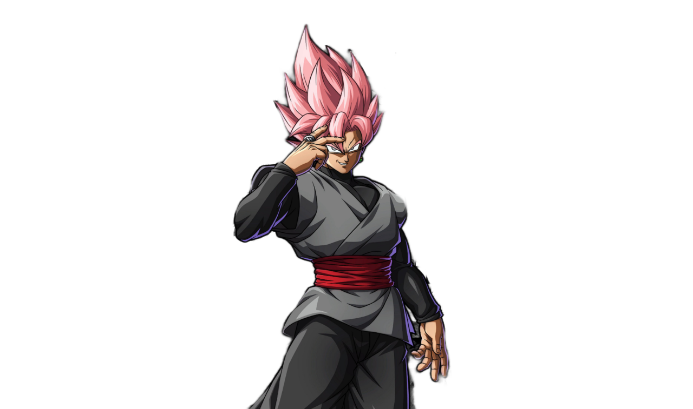
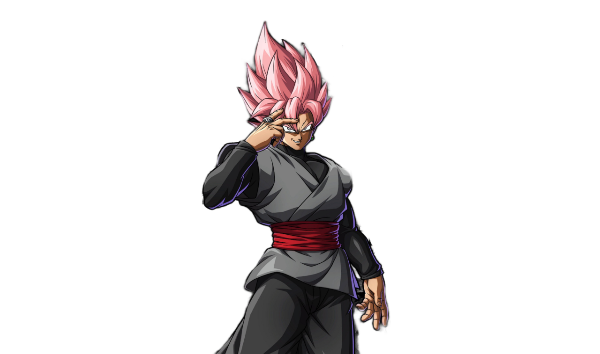

Dragon ball Z
Dragon Ball Z
"Dragon Ball Z" is an iconic anime series renowned for its epic
battles and compelling characters. Set in a universe where powerful
warriors, known as Saiyans, traverse galaxies, the series follows Goku
and his allies as they defend Earth from formidable foes. Fueled by
themes of friendship, perseverance, and growth, each saga unfolds with
intense martial arts clashes and the pursuit of ever greater power
levels.
From the iconic Kamehameha to transformations like Super Saiyan,
"Dragon Ball Z" captivates with its blend of action-packed sequences
and poignant moments, securing its place as a beloved classic in anime
history.
Son Goku
Son Goku, the charismatic protagonist of "Dragon Ball Z," embodies the
essence of a pure-hearted warrior. Born with a Saiyan heritage, Goku's
journey from a child with a monkey tail to Earth's defender against
cosmic threats is legendary. His unwavering optimism and insatiable
thirst for martial arts challenges drive him to continually surpass
his limits, achieving iconic transformations like Super Saiyan.
Despite his immense power, Goku remains humble and compassionate,
forming enduring friendships and mentoring the next generation of
warriors. With boundless energy and a relentless spirit, Goku's quest
for strength and justice resonates with fans worldwide, defining the
essence of heroism in anime.
Vegeta
Vegeta, the proud Saiyan prince in "Dragon Ball Z," embodies a complex blend of arrogance, ambition, and redemption. Initially introduced as a ruthless antagonist, Vegeta's character evolves through his rivalry with Goku and the challenges he faces. Driven by a desire to surpass Goku and reclaim his Saiyan heritage, Vegeta's journey is marked by moments of growth and introspection.
Despite his initial antagonism, Vegeta develops deep bonds with his family and reluctantly allies with Earth's defenders against formidable foes. His transformation from a villain to a reluctant hero highlights themes of redemption and the enduring struggle to define one's identity and purpose.
Frieza
Frieza, one of the most iconic villains in "Dragon Ball Z," embodies ruthless power and cunning intellect. As a tyrannical emperor ruling over his galactic empire, Frieza's pursuit of absolute control leads him into conflict with Goku and the Z Fighters. His transformations and mastery of ki manipulation make him a formidable adversary, testing the limits of our heroes at every turn.
Despite his malevolent nature, Frieza's character is layered with complex motivations and a deep-seated desire for dominance. His role in the series highlights themes of power, ambition, and the consequences of unchecked tyranny.
Broly
Broly, the Legendary Super Saiyan in "Dragon Ball Z," represents raw power and uncontrollable rage. Born with unparalleled strength and an untamed fury, Broly's origins and encounters with Goku and Vegeta unleash devastating battles that shake the very foundations of the universe. His relentless pursuit of dominance and vengeance sets him apart as a force of nature.
Despite his initial portrayal as a berserker, Broly's character evolves through deeper exploration, revealing tragic dimensions and a longing for acceptance. His clashes with Goku and Vegeta redefine the limits of Saiyan power and the bonds that transcend conflict.
Zamasu
Zamasu, a Supreme Kai apprentice in "Dragon Ball Z," evolves into a complex antagonist driven by twisted ideals of justice and purity. Obsessed with eradicating mortal life and establishing his vision of divine order, Zamasu's fusion with Goku Black creates a cataclysmic threat across timelines. His fusion and mastery of divine power challenge Goku and Vegeta in ways they've never faced before.
Despite his godly origins, Zamasu's descent into madness and obsession with his divine mission highlight themes of hubris and the corrupting influence of power. His conflict with the Z Fighters tests their resolve and forces them to confront the implications of immortal ambition.